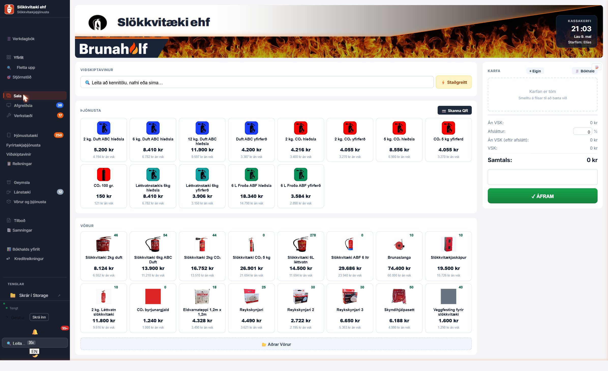
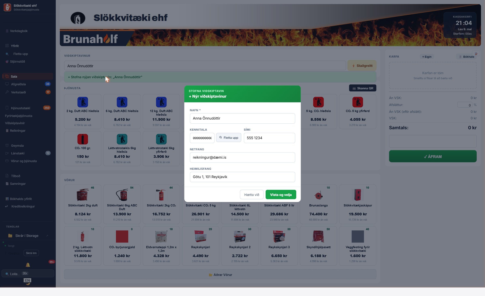
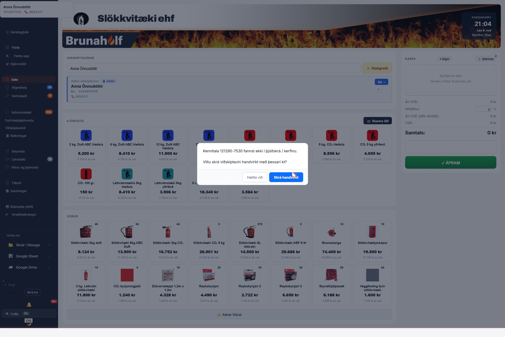
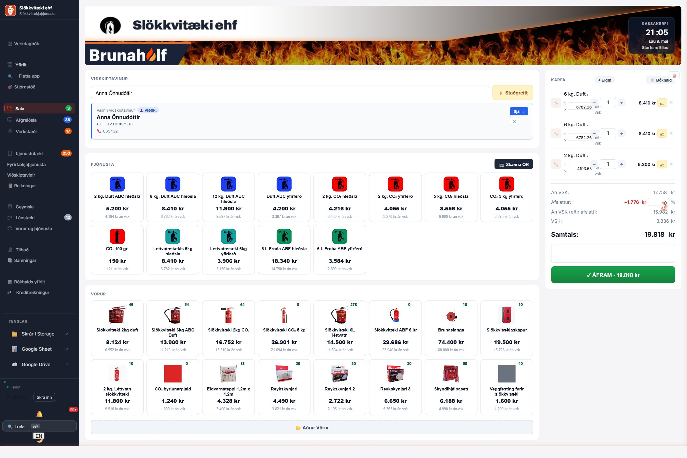
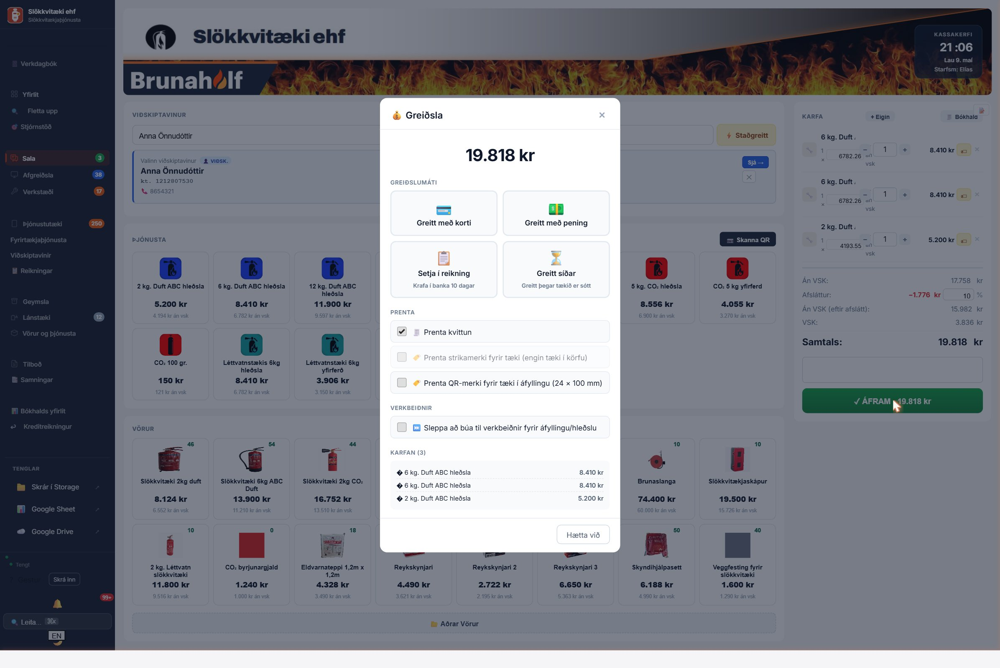
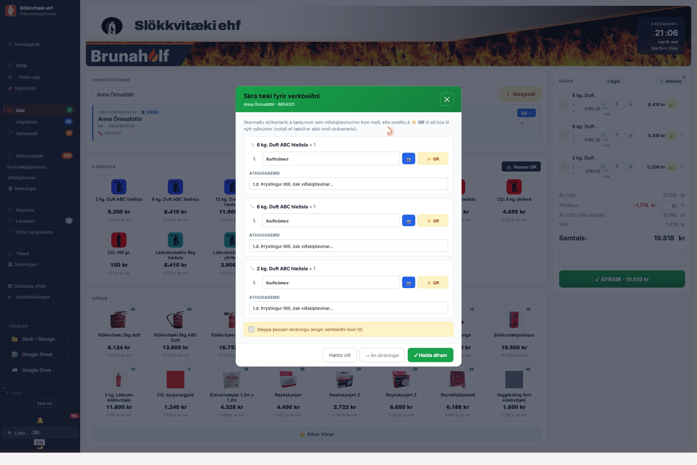

Þetta er tilfellið: Einstaklingur eða fyrirtæki kemur óvænt í verslun með tæki sem þarf að hlaða og skoða. Hér er hvernig þú stofnar nýjan viðskiptavin, býrð til verkbeiðni og rukkar — allt í Sala-tab.
Smelltu á Sala í vinstri valröðinni. Þetta er aðal POS sýnin (kassakerfið).

Efst: leitarreitur fyrir viðskiptavin. Til hægri: karfa. Í miðju: ÞJÓNUSTA og VÖRUR flísar sem þú smellir á til að bæta í körfu.
Smelltu í leitarreitinn og skrifaðu nafn, kennitölu eða síma. Ef viðsk. er ekki til birtist grænn takki sem segir „+ Stofna nýjan viðskiptavin: ...".
Þetta opnar einfalt form með bara þeim reitum sem þarf:

Smelltu „Vista og velja" til að stofna og bæta í körfuna.
Ef þjóðskráruppfletting (RSK) finnur ekki kennitöluna birtist staðfestingargluggi: „Viltu skrá viðskiptavin handvirkt með þessari kt?"

Þú getur:
Smelltu á þjónustuflísar í miðjunni til að bæta í körfu. Hver smellur bætir einu eintaki — smelltu þrisvar fyrir 3 stk. eða notaðu + - takka í körfunni.
Þú getur líka smellt á VÖRUR flísar fyrir vörusölu (ný slökkvitæki, brunaslöngur, etc.).
Í körfunni hægra megin er „Afsláttur" reitur. Sláðu inn prósentu (t.d. 10) og smelltu Tab eða Enter.

Karfan sýnir 3 tæki, 10% afsláttur, samtals 19,818 kr.
Bókhalda takkann efst í körfunni til að breyta um VSK eða nota tilboðsverð fyrir samningshafa.Þegar karfan er rétt smellirðu á stóra græna takkann „✓ ÁFRAM · 19.818 kr" neðst.
Greiðsluglugginn opnast með 4 valmöguleika:

drög stöðu — hún sést EKKI í Bókhaldi/Tekjum fyrr en hún er kláruð.Þegar þú velur greiðslumáta opnast gluggi sem biður um raðnúmer á hverju tæki. Þú getur:

Slá inn raðnúmer fyrir hvert tæki:
Eða smelltu á „→ Án skráningar" ef tækið er ekki með raðnúmer (t.d. nýtt tæki sem á að selja).
Smelltu á „✓ Halda áfram". Kerfið býr þá sjálfvirkt til:
| Hvert fer salan | Hvenær |
|---|---|
| Bókhalds yfirlit (drög) | Strax — sjást með drög-merki |
| Reikningar (ógreitt) | Aldrei (drög) → þegar viðsk. sækir tækin |
| Verkstæði → Móttekið | Strax — verk birtist í verkröð |
| Tekjur | Þegar greiðsla er móttekin (drög → final) |
Já — smelltu á „→ Án skráningar" takkann í Skrá tæki glugganum. Engin verkbeiðni er búin til, bara salan. Notist fyrir sölu á nýjum vörum sem viðsk. fer með heim strax.
Veldu „Greitt með korti/pening" — salan er strax greidd og kláruð, en verkbeiðnin bíður á Verkstæði þangað til viðsk. mætir. Þá smellirðu bara „Sótt ✓" í Afgreiðslu.
Ekki á sölu sem er búin að klára. Þú getur kreditfært reikninginn (Reikningar → Kreditfæra) og búið til nýjan með réttum afslætti.
Slökkvitæki ehf · 565-4080 · eldklar@eldklar.is
← Önnur kennslubók: Sækja inn úr fyrirtæki